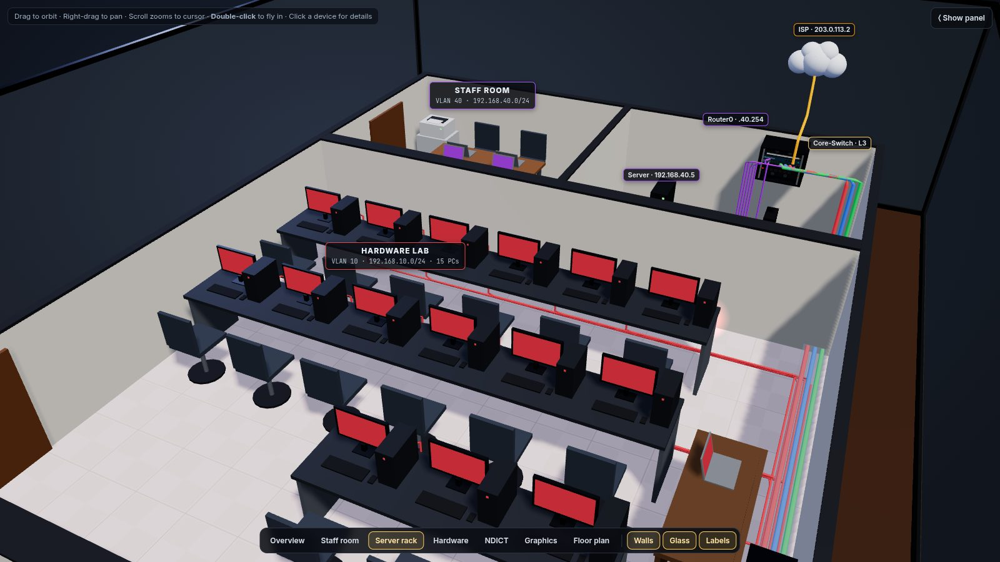
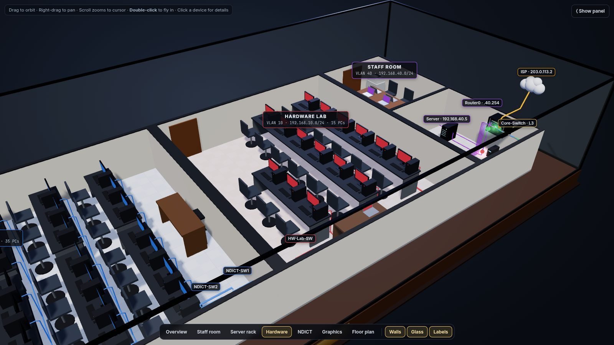

Network Lab 80: 3D Lab in a Box
An interactive 3D model of an 80-workstation campus lab network, designed in Cisco Packet Tracer: VLANs, a Layer 3 core, DHCP relay, NAT and live traffic.
- Three.js
- Cisco Packet Tracer
- VLAN
- NAT/PAT
- RoleNetwork designer
- ContextNDICT (NVQ Level 5) final proposal
- Scale80 PCs, 7 laptops, 3 printers, 4 VLANs
- ToolsCisco Packet Tracer, Three.js
The 3D lab

A screenshot of the interactive model. Launch it to orbit, zoom and click devices (best on a laptop).
What this is
The network is my NVQ final proposal for an IT institute with three computer labs and a staff room: 80 PCs, 7 laptops and 3 printers on four VLANs, routed by a Layer 3 core switch, with one server for DHCP, DNS and web, and a router doing NAT/PAT to the internet.
I designed and tested it in Cisco Packet Tracer, then turned it into an interactive 3D model so anyone can explore it without installing anything.
What you can do in the model
Fly around
Orbit, pan and zoom, or jump to preset views: overview, staff room, server rack, each lab and the floor plan.
Click any device
Select a PC, switch, the router, the core switch or the server to see its configuration from the project.
Watch traffic
Run a live simulation of DHCP, inter-VLAN routing and internet (NAT) traffic, with counters for each.
Peel the layers
Toggle the glass case, walls, labels, PC numbers and each VLAN's cabling.
Preview the ACLs
Switch on the planned lab-isolation policy and see which flows would be dropped.
Read the design
IP plan, security matrix, hardware list and the configuration order are in the side panel.


Addressing plan
| VLAN | Lab | Subnet | Gateway (SVI) | PCs |
|---|---|---|---|---|
| 10 | Hardware | 192.168.10.0/24 | 192.168.10.1 | 15 + laptop |
| 20 | NDICT | 192.168.20.0/24 | 192.168.20.1 | 35 + laptop, printer |
| 30 | Graphics | 192.168.30.0/24 | 192.168.30.1 | 30 + laptop, printer |
| 40 | Staff and servers | 192.168.40.0/24 | 192.168.40.1 | server .5, router LAN .254 |
DHCP pools start at .10 (245 hosts per VLAN) and a relay (ip helper-address) on the core switch forwards requests to the server. The router's WAN side is 203.0.113.1/30.
Security policy
Each lab is isolated from the others and every lab can reach the staff and server VLAN. The ACLs are documented as a planned step (the 3D model lets you preview their effect), and port security (sticky MAC, restrict) is tested on the hardware lab switch.
| From \ To | HW (10) | NDICT (20) | GFX (30) | Staff/Net (40) |
|---|---|---|---|---|
| HW (10) | n/a | deny | deny | permit |
| NDICT (20) | deny | n/a | deny | permit |
| GFX (30) | deny | deny | n/a | permit |
| Staff (40) | permit | permit | permit | permit |
Physical design
- Building: 7 m wide. Staff and server room 2.8 m, hardware lab 6 m, NDICT lab 8.8 m, graphics lab 11.8 m, with 30 cm walls between labs.
- Distributed access switches per lab keep every Cat6 run well under 100 m, with one trunk uplink per lab along the wall.
- Hardware list: TP-Link TL-ER6120 dual-WAN VPN router; TL-SG3428 24-port and TL-SG2218 16-port managed switches; 6U wall rack with cooling fans, PDU and a 650 VA UPS; Cat6 cable, keystone jacks, faceplates and trunking.
Configuration order
- DHCP server pools
- Core switch:
ip routing, SVIs, relay, trunks - Access switches
- End devices (DHCP)
- Router WAN and NAT/PAT
- ACLs
- SSH
- Port security rollout
- End-to-end verification
How the viewer is built
The whole model is one HTML file that uses Three.js (loaded from a CDN) for the 3D scene, with no build step and no backend. It runs entirely in your browser.
Packet Tracer labs on GitHub · 80-workstation proposal on GitHub